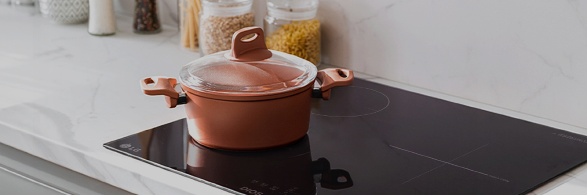
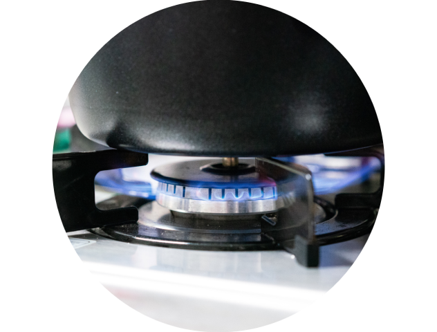

주방전기레인지
[ KV ]


보다 더 스마트한 일상
LG ThinQ의 시작

[ 씽큐 안내 ]
보다 더 스마트한 일상, LG ThinQ
씽큐는 사람과 가전을 AI 기술로 연결하여 더 편리하고 놀라운 일상을 만드는 LG전자의 스마트 홈 플랫폼입니다.
*본 콘텐츠는 ThinQ 앱의 콘텐츠입니다.
[ 따옴표 박스 ]
최근, 실내 환경오염에 대한 관심이 높아지면서 건강관리 가전에 대한 관심도 높아졌죠. 가스레인지를 주로 사용하던 한국도 점차 전기레인지를 선호하고 있어요.
전기레인지를 구입하셨거나, 이미 가스레인지를 사용하고 있지만 전기레인지가 어떤 것인지 궁금해하시는 분들을 위해 쿡탑의 종류와 특장점들을 알아볼게요.
[ 컨텐츠 ]
[ 문단 - 중앙 정렬 버전 ]
쿡탑 종류
이렇게 구분해요!
가열 방식의 차이로만 이해하기 쉬우나 효율과 사용성 그리고 유해가스 배출량에서 결정적인 차이가 있어요.
[ 문단 - 중앙 정렬, 이미지 버전 ]

가스레인지
LNG나 LPG 등의 가스로 버너에 불꽃을 주면 점화된 가스가 연소되며 불이 생성되는데, 이 불로 용기에 직접적인 열을 전달하여 가열시키는 방식이에요.
[ 문단 - 좌측 정렬 버전 ]
01
이렇게 구분해요!
가열 방식의 차이로만 이해하기 쉬우나 효율과 사용성 그리고 유해가스 배출량에서 결정적인 차이가 있어요.
*물걸레 기능이 있는 일부 모델에 해당함[ 문단 - 좌측 정렬 , 보더 버전 ]
01
이렇게 구분해요!
가열 방식의 차이로만 이해하기 쉬우나 효율과 사용성 그리고 유해가스 배출량에서 결정적인 차이가 있어요.
*물걸레 기능이 있는 일부 모델에 해당함[ 이미지 - 기본 ]

[ 이미지 - MO full 사이즈 ]
[ 리스트 - 아이콘 리스트 ]
[ 리스트 - 체크 리스트 ]
-
청소 후 물통을 비우고 물걸레를 깨끗이 세척해 주세요.
-
물통을 세운 상태에서 토출구에 휴지, 헝겊 등을 붙여 잔수를 제거해 주세요.
-
물통의 물을 최대한 털고, 마개 쪽으로 물통을 기울여 물을 모은 다음, 휴지, 헝겊 등의 위에 엎어주세요.
-
물통과 걸레, 걸레판은 그늘에서 완전히 건조한 후 보관 하세요.